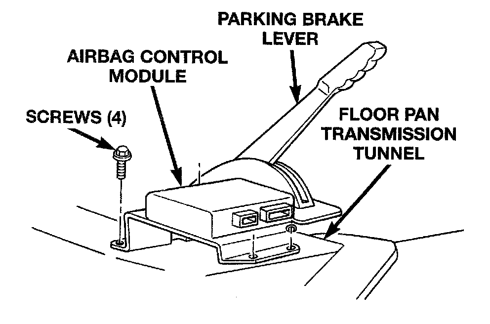

Impact Sensor: Description and Operation
DESCRIPTIONAirbag Control Module Remove/Install:

The impact sensor provides verification of the direction and severity of an impact. One impact sensor is used. It is located inside the Airbag Control Module (ACM), which is secured to a bracket on the floor pan transmission tunnel inside the vehicle.
OPERATION
The impact sensor is an accelerometer that senses the rate of deceleration. The microprocessor in the ACM monitors the impact sensor signal. A pre-programmed decision algorithm in the microprocessor determines when the deceleration rate indicates an impact is severe enough to require airbag system protection. When the programmed conditions are met, the ACM sends an electrical signal to deploy the airbag system components.
The impact sensor is calibrated for the specific vehicle. The sensor is only serviced as a unit with the ACM. The sensor cannot be repaired or adjusted and, if faulty or damaged, the ACM unit must be replaced.
CIRCUIT OPERATION
The Airbag system uses a sensor internal to the Airbag Control Module (ACM) to detect impact. For information regarding operation of this sensor.